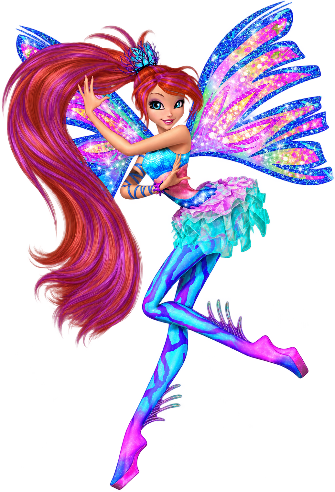
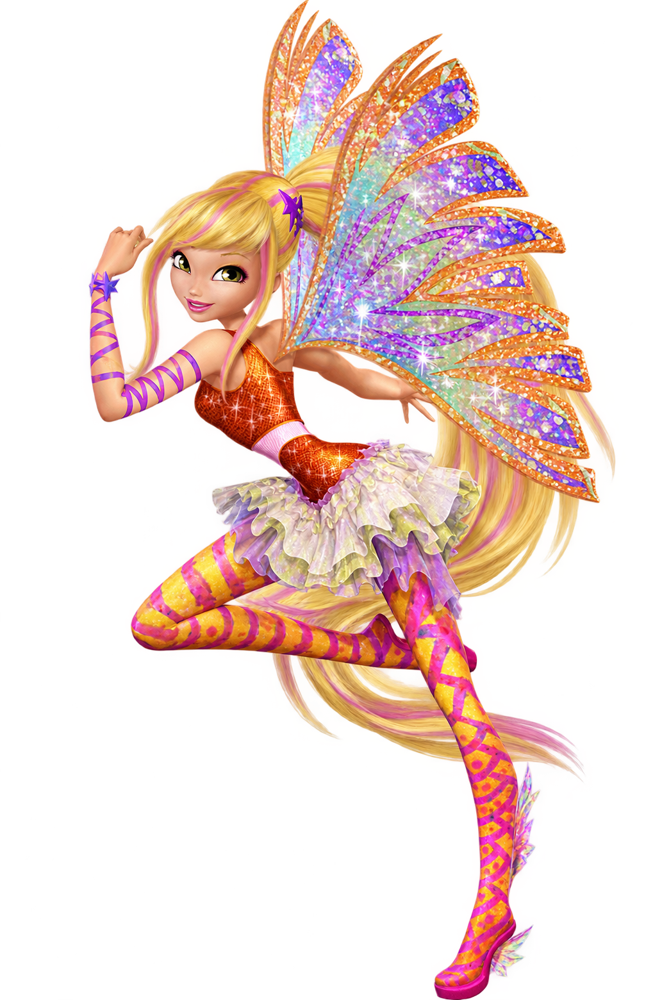
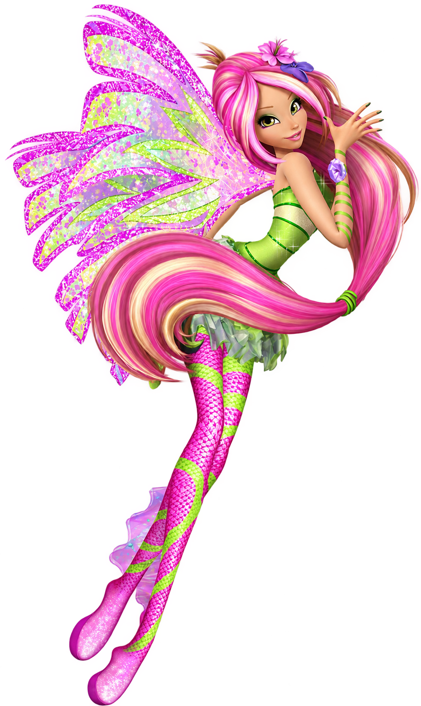
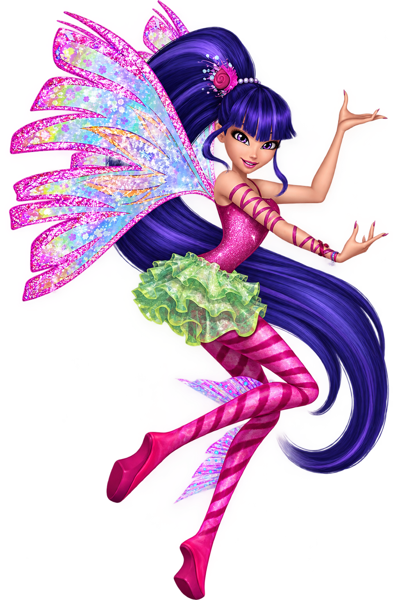
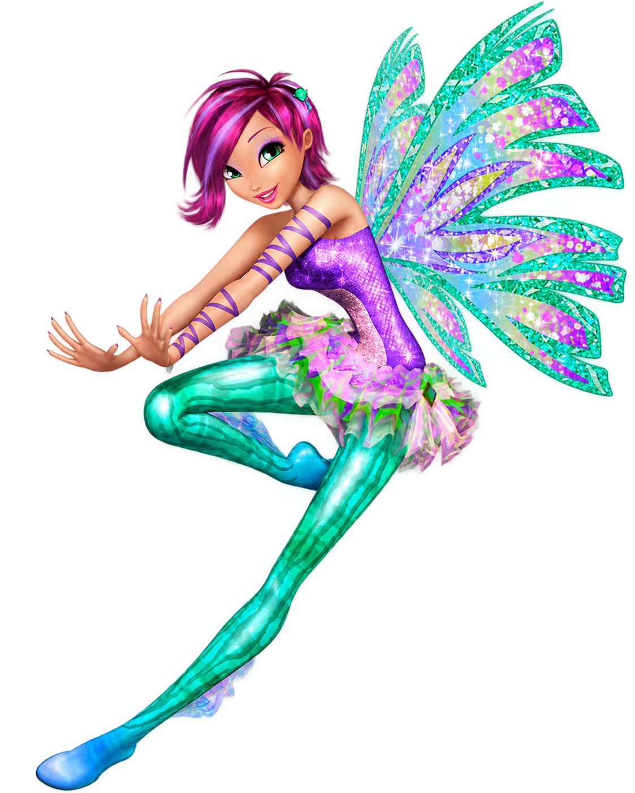
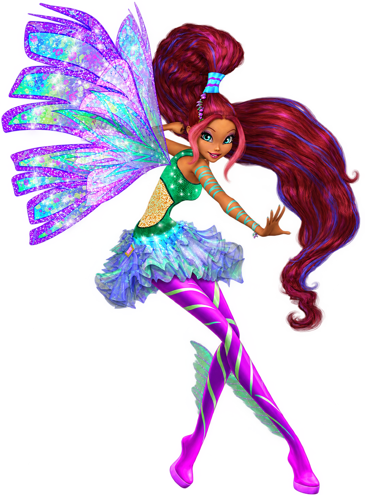

01
Bloom
Bloom é a fada da Chama do Dragão. Corajosa e determinada, ela descobre seus poderes e sua verdadeira origem.
🧚♀️ Winx
MAGIX
Conheça as principais fadas das Winx, seus poderes, personalidades e histórias.

01
Bloom é a fada da Chama do Dragão. Corajosa e determinada, ela descobre seus poderes e sua verdadeira origem.

02
Stella é a fada do Sol e da Lua. Alegre, divertida e apaixonada por moda, ela é uma grande amiga das Winx.

03
Flora é a fada da natureza. Gentil e carinhosa, ela possui uma forte ligação com plantas e flores.

04
Musa é a fada da música. Sensível e talentosa, ela utiliza seus sentimentos e sua música em suas aventuras.

05
Tecna é a fada da tecnologia. Inteligente e racional, ela usa seus conhecimentos para ajudar suas amigas.

06
Aisha é a fada das ondas e da água. Determinada e corajosa, ela é uma grande amiga e integrante das Winx.
MAGIX
Continue explorando o mundo das Winx, seus poderes, aventuras e amizades.
Ir para Curiosidades